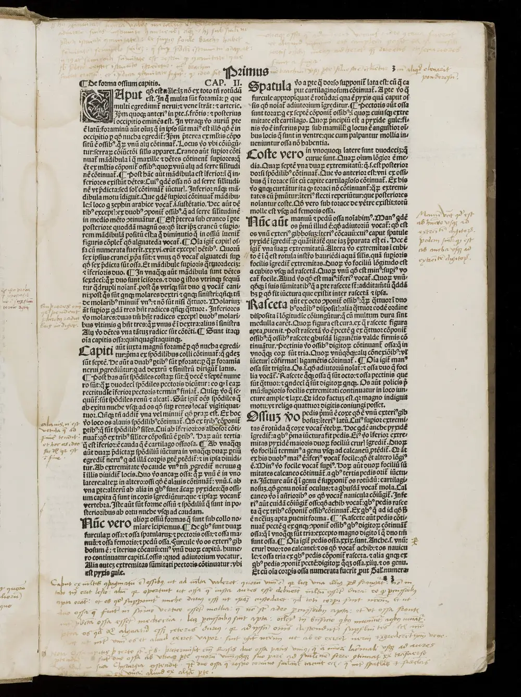

Doctors and Unani medicine
We started in Chennai in 1993 as Dr. M. H. Sheriff’s Clinics, with an outpatient department, a minor operation theatre, Unani clinics, spine therapy and a Hijama unit. The Abu Dhabi centre brings the same care to Madinat Al Riyad.

Dr. Muhammad Hidayathullah Sheriff
Founder, Medical Director & Chairman
DoH | DHA | MoH licensed Specialist in Unani Medicine and Surgery
From the founder’s message:
“As the Founder and Medical Director, I am committed to offering a patient-centered approach where prevention, diagnosis, and treatment are carried out with compassion, scientific integrity, and deep respect for the human body’s natural healing power.”
The centre carries the name of Hakeem Al Raazi and is built on Tibb-e-Unani: traditional healing, kept to the standards of modern healthcare and the Department of Health guidelines.
“We strive to look after all our patients like we would do to our own kith and kin. It is our proud privilege to care for you.”

The name on our door
Abu Bakr Al-Razi, Rhazes in Latin (850–925 AD), was one of the physicians who built Unani medicine, with Ibn Sina (Avicenna, 980–1037 AD). They took the Greek medicine of Hippocrates and Galen, translated it into Arabic and Persian, and developed it into a full system. Their books were still printed and read in Europe hundreds of years later.
The four humours
Unani medicine looks at the balance of four humours in the body. Your own balance is your temperament, Mizaj, and it decides your treatment.
Khoon · bloodBalgham · phlegmSafra · bileSauda · black bile
The four ways we treat
- 1
Ilaj bil Ghiza Diet therapy
- 2
Ilaj bid Dawa Herbal and mineral medicine
- 3
Ilaj bit Tadbeer Regimental therapy: Hijama, massage
- 4
Ilaj bil Yad Surgery (not practised in the UAE centre)
The six essentials
- Clean airBreathing fresh, pure air daily
- Food and drinkEating for your temperament and digestion
- Movement and restKeeping active, with time to recover
- Mental balanceLess stress, more calm
- Sleep and wakingIn step with your body clock
- EliminationHelping the body clear what it doesn’t need
Come and meet us
Twin Residence, Flat 201, 2nd floor, Al Radef Street, Madinat Al Riyad. Saturday and Monday to Thursday 10am–2pm and 6–10pm, Friday 6–10pm, Sunday 10am–2pm.